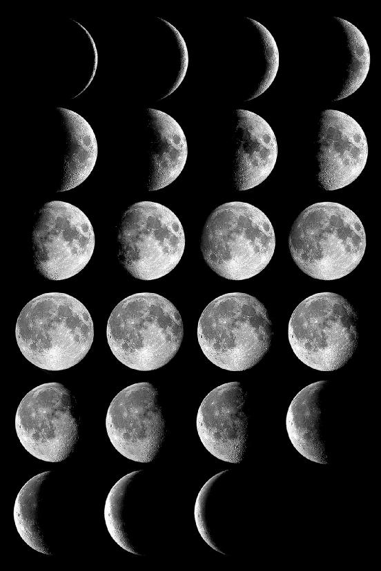
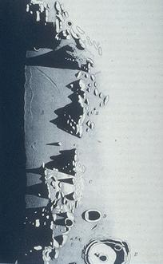
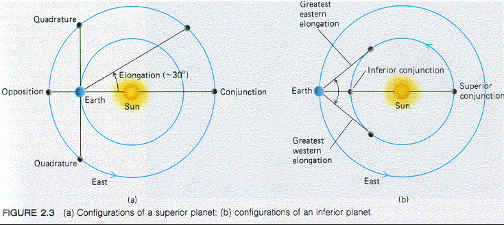
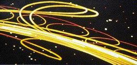
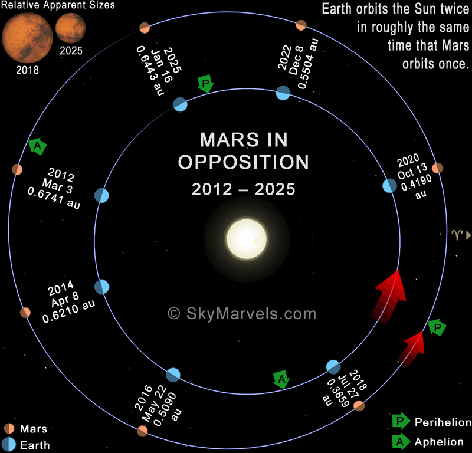
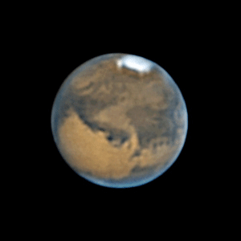
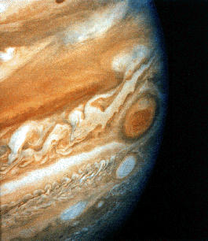
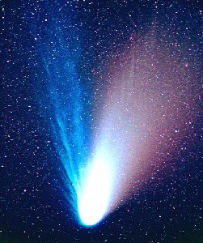

ASTR 1230 (O'Connell) Lecture Notes
4. SOLAR SYSTEM ASTRONOMY
{kind=link}
Saturn imaged with a 14-in amateur telescope
by Damian Peach
A. INTRODUCTION
The Solar System consists of the Sun, 8 planets, a number of "dwarf planets," over 160 satellites, and a thin scattering of rocky or icy planetoids, comets, dust, and gas. The Sun is the dominant object, being 1000 times more massive than the next largest (Jupiter). By terrestrial standards, the density of matter in the Solar System is extremely low, and the planets are separated by enormous gaps. Other than the Sun, no solar system object is self-luminous (at visible wavelengths), and all shine by reflected sunlight. From the Earth, the second and third-brightest Solar System objects are the Moon and Venus. Other than the Sun, the Moon, and some comets, no Solar System object is resolvable with the naked eye---all appear instead to be point sources of light. So, real exploration of the nature of the planets and interplanetary denizens required the use of telescopes. Many interesting features of the Solar System can be observed with the naked eye, binoculars, and small telescopes, and this lecture is aimed at exploring some of these.B. SOLAR SYSTEM MOTIONS
For most of human history, "astronomy" consisted mainly of naked-eye studies of the motions of solar system bodies. We will use the Starry Night planetarium software to simulate the appearance of the sky over many years and illustrate the apparent motions of the Sun, Moon, and planets. We call these "apparent" motions, because they can be produced by motions of the Earth, which carries the observers (us), as well as by the intrinsic motions of the objects themselves.- The stars constitute the backdrop, or "reference frame," against which we judge motions of other objects.
- The Sun moves about 1 degree eastward each day with
respect to the stars and takes 365.25 days to come back to
the same position against the stars.
-
The Sun's annual path through the stars
is always the same and is called the ecliptic. The set of
constellations through which the ecliptic passes is called the
Zodiac (see notes
for Lecture 1).
The ecliptic path is tilted 23.5 degrees with respect to the
celestial equator, so the Sun's distance from the equator ranges from
0 degrees to 23.5 degrees throughout the year
(illustrated here). Thus, the
Sun's maximum range in altitude from the southern horizon at transit
(i.e. local noon) is 47 degrees. The consequent large change
in the daily solar heat input at a given latitude drives
the "seasons"
(see this
example).
The times of the year when the Sun crosses the equator are
called equinoxes and times when the Sun is at maximum
distance from the equator are called solstices.
- At the equinoxes, the hours of daytime
(when the Sun is above the horizon) and nighttime are 12 hours each
for all latitudes on Earth. The vernal and autumnal equinoxes occur
at about March 21 and September 21, respectively.
At the solstices, we have the longest periods of daytime/nighttime,
and the most extreme dependence of sunlit time on latitude. The
summer and winter solstices occur at about June 21 and December 21,
respectively. (The labeling here is based on the seasons in the
northern hemisphere; seasons are, of course, reversed in the southern
hemisphere.)
- The Moon moves about 13 degrees eastward each day with respect to the stars and takes 27.3 days to come back to the same position against the stars. On average, the rise/set times of the Moon advance by about 50 minutes each day. The Moon's path is tilted 5 degrees from the ecliptic.
- There are five easily visible objects in the sky other
than the Sun and Moon which exhibit significant motions with respect
to the stars. These are the brighter planets (the others were
telescopic discoveries). Although not as fast as the solar and lunar
motions. their motions are considerably more complex:
- The general motion of the planets with respect to the stars is eastward in the sky, measured over a period of weeks to months.
- The speed of the motions depends on the planet, decreasing from rapid to slow in the order: Mercury, Venus, Mars, Jupiter, Saturn. It takes Saturn over 29 years to return to the same place in the sky.
- Mercury and Venus never move very far from the Sun and appear to move back and forth in front of/behind it. The other planets can appear up to 180o from the Sun.
- At least once per year, each of the planets halts its eastward motion and loops backward to the west for a brief period before starting to move eastward again. This backward loop is called retrograde motion.
{kind=link}
{kind=link}
C. GEOMETRY OF THE EARTH'S ORBIT
The apparent annual motion of the Sun is caused by the fact that we are observing it from the Earth, which is a planet moving in orbit around the Sun.- Earth's orbit is nearly circular (the distance to the Sun varies only 3.4%), with a mean radius of 150,000,000 km or 93,000,000 miles. The mean radius of Earth's orbit is defined to be the Astronomical Unit (AU).
- Its orbit lies in a plane (i.e. seen edge-on it would look like a thin line), and it orbits the Sun in 365.25 days (one year). Its motion is counterclockwise as seen from above the N pole.
- The stars visible at night are those "opposite" the Sun. See figures above (warning! these are grossly distorted in scale!). The night side of Earth is that opposite the Sun. So, in May, the constellation Scorpio will be prominent in the night sky, while in November, Taurus is prominent whereas Scorpio lies in the direction of the Sun and therefore is not visible because of the atmospheric glare.
- The Earth's motion around the Sun is counterclockwise in the drawings above. This produces an apparent eastward angular displacement or "motion" of the Sun against the stellar reference frame as seen from the Earth.
- The effects of Earth's motions on the apparent motions of the Moon and planets are described below.
{kind=link}
from a spacecraft (click for an enlargement).
D. THE MOON
The Moon is the Earth's only natural satellite. Although it has only 1/4 the diameter of Earth, it is the largest satellite with respect to its primary of any in the Solar System except for Pluto's moon Charon.PHASES OF THE MOON
-

- Although it seems bright, the Moon's surface is actually very unreflective (see the image above comparing the Earth and Moon). Its reflectivity, or "albedo," is only about 10%. Nonetheless, it is close enough to us to produce a large amount of light, and it is the second brightest object in the sky after the Sun.
- During the Moon's monthly circuit, its bright area exhibits drastic changes in apparent shape, from crescent to round and back. The shapes are called phases of the Moon. The phases repeat after a period of 29.5 days. This is longer than the time it takes the Moon to circle the Earth once against the stars because of the continual motion of the Earth around the Sun (explained here). A montage of photographs of the lunar phases during a month is shown at the right. Click for an enlargement.
- Lunar phases had considerable practical consequences in pre-industrial societies that had to rely on the Moon for nighttime illumination. They still have dominant effects on astronomical observations because of the tremendous brightening of the night sky produced by scattered light near full Moon (called "bright time" by astronomers).
- The phases of the Moon are a shadow effect originating from the facts that it is a sphere, half-illuminated from the direction of the Sun which we view from different perspectives as it moves in its orbit around Earth.
- The lunar phases as well as two other important phenomena associated with the Moon -- polar precession and eclipses -- are explained in detail on this supplementary page from ASTR 1210.
{kind=link}
{kind=link}
{kind=link}
Click for full image.
SURFACE OF THE MOON
The Moon is the only "planetary" surface that can be examined in detail through a small telescope, and it is a fascinating study. Galileo's small telescopes (1609) first revealed the Moon's remarkable terrain. - The Moon has no atmosphere, so there is no obscuration of its surface features. More importantly, these are not subject to weathering. The Moon's surface has been shaped over 4.5 billion years by the relentless infall of asteroids, meteoroids, and smaller interplanetary debris. Almost all of its geology is related to these impacts.
- The numerous craters (up to 150 mi diameter) are the best indicators of impacts. Unlike on the Earth, almost none of these are related to volcanic activity. In fact, the Moon's interior has been too cool to sustain surface volcanic activity for over a billion years. The mountains on the Moon (casting shadows in the drawing at right), which range up to 25,000 feet, are also impact effects, not the products of plate tectonics as on Earth. Similar scars from impacts cover the other solid surfaces in the solar system (Earth and a few outer planet satellites excepted).
- The rounded, dark grey areas (part of the "man in the Moon" face) are called maria ("seas"), even though we now know they contain no water. They are the products of ancient massive impacts by asteroidal bodies which were later filled in by dark lava. They have relatively smooth surfaces except for a few craters. These regions are younger than the lighter grey, rougher "highland" regions. Ages can be estimated by the crater density (fewer craters implies younger regions).
-
 More
illustrations and descriptions of lunar topography.
More
illustrations and descriptions of lunar topography.
E. PLANETARY ORBITS
- The planets accumulated from the flattened band of solid debris that surrounded the Sun as it formed. Their orbits consequently lie in almost, but not quite, the same plane in 3-dimensional plane.
- The picture above shows an oblique view of the planetary orbits to scale (though the planet sizes shown are not to scale). Here is an edge-on plot of the orbits showing the near-coincidence of the orbital planes.
- The plane of the Earth's orbit defines the ecliptic path we see on the sky. Because most planetary orbits are only slightly inclined with respect to Earth's, they will always be observed in a relatively narrow band in the sky, centered on the ecliptic. They therefore move through the Zodiacal constellations.
- The apparent motions of the planets in the sky are determined by
orbital geometry and are a combination of the intrinsic motion of the
planets and the motion of the Earth.
 - See the illustration above. All planets move in the same
direction around the Sun (counterclockwise as seen from above the
Earth's North Pole). Planets nearer the Sun move faster
in their orbits and have shorter orbital periods. (Historically, this
was an important clue to the nature of gravity as deduced by Newton.)
-
Right panel: As viewed from the Earth, the two planets inside the
Earth's orbit (so-called "inferior" planets) can
never appear at large angles from the Sun. Mercury and Venus always
stay within 27o and 48o, respectively, of the
Sun.
Left panel: The planets outside Earth's orbit
("superior" planets), starting with Mars, can be seen
at up to 180o from the Sun. When they are exactly at that
point they transit at midnight and are said to be
at "opposition" with respect to the Sun. As the
figure shows, planets at opposition are also nearest the Earth
then and are therefore brightest.
These angular relationships are called the planetary
configurations.
- The planetarium simulation in the image below shows the
concentration of the planetary orbits to the ecliptic, as seen from
Earth.
 Time lapse exposure of a planetarium simulation
of several years of planetary motions as seen from Earth. - The "retrograde loops" in the trajectories in the image above are caused not by the planet's motion but by the Earth's annual motion around the Sun. Here is an animation showing how retrograde motion is produced by the change in perspective for Earthbound observers as the Earth moves in its orbit. The retrograde motion for a superior planet is greatest at opposition.
{kind=link}
{kind=link}
{kind=link}
{kind=link}
relative scale (though not separation)
F. OBSERVING THE PLANETS
Three Kinds of Planets: What a mess! In the summer of 2006 astronomers held a debate over the meaning of the term "planet"---specifically whether or not Pluto and the several other newly discovered distant objects that are similar to Pluto should be placed in a separate category. In the end, the International Astronomical Union voted to create a new category of "dwarf planet" for these latter objects. All this was handled very clumsily; and it generated needless controversy, especially among the many who were fond of planet Pluto, since it was demoted. Including this new category, there are three types of planets: terrestrial planets, Jovian planets, and dwarf planets:- Terrestrial Planets (archetype Earth; Mercury, Venus, Mars): These are relatively small planets with solid, rocky bodies and thin or absent atmospheres. The rocky material is made mainly of silicon, oxygen, iron and similar elements. Even though Venus' atmosphere is 100 times thicker than Earth's, this still counts as "thin."
- Jovian Planets (archetype Jupiter; Saturn, Uranus, Neptune): Also called "giant" planets, these are primarily made of hydrogen and helium, with a thin smattering of heavier elements. They are much larger than Earth. They have enormous atmospheres with denser but slushy interiors. They may have rocky or icy cores, similar in size to the Earth, but there is no well defined boundary between their atmospheres and their interiors.
- Dwarf Planets (archetypes Ceres, Pluto; dozens of others): any other object in orbit around the Sun and massive enough for self-gravity to make it roughly spherical. Ceres is in the asteroid belt, but no other asteroids qualify as dwarf planets. The other dwarfs are all in the Kuiper Belt, in the outer solar system. Pluto-like dwarfs are primarily made of ices, with additional rocky material; Ceres contains a larger fraction of rocky material. There are probably thousands of Pluto-like dwarfs in the outer solar system.
{kind=link}
- UFO Reality check: Watch for 5 minutes; is the "UFO" stationary with respect to the stars? Is it within about 40o of the western or eastern horizon? Is it in a Zodiacal constellation? If yes, then it's probably Venus.
- Venus is the planet nearest Earth and has the orbital period most closely matching Earth's. Consequently, it can "linger" near the horizon before sunrise or after sunset over several month's time, undergoing a complex set of motions. See our Starry Night demonstration.
- The carbon dioxide which makes up the bulk of Venus' atmosphere would be transparent, but unfortunately it is filled with dense clouds (made of sulfuric acid droplets!), which shroud the surface. However, Venus does show pronounced phases, like the Moon's (see illustration at right) as it orbits the Sun. The geometry is shown here. Neither Venus nor Mercury have satellites.

{kind=link}
-

- Click here for a Java animation of the relative motion of Earth and Mars. At opposition, it can be brighter than Jupiter. In August 2003, Mars was closer to Earth than at any time since 57,617 BC (34,646,418 miles distant). The opposition in July 2018 was also very favorable, and the one in October 2020 will be only slightly less so. Click on the chart at the right for a diagram of upcoming oppositions.
- Mars' atmosphere is primarily carbon dioxide and is transparent. Its surface color is conspicuously red-pink (hence its association with the God of War), caused by iron oxide compounds = rust on its surface. Mars has been explored with ever increasing resolution by Earthbound telescopes, orbiting spacecraft, and lander spacecraft. Use the links below to reach the large and beautiful set of spacecraft images of Mars. 
- Mars is distant enough that even at opposition telescopes on Earth yield relatively poor resolution (especially since they must contend with seeing), and this led to a long controversy over whether or not there was evidence for "canals" or other artificial features on its surface. (More details given here.)
- However, under good conditions with an 8-in telescope, you can easily see the polar caps (some water but mainly frozen CO2) and extensive markings on the surface. Monitoring these features over several months will reveal slow changes, including growth or shrinking of the caps with the seasons and effects of dust storms on the surface, especially in the Martian spring. The image at the right was taken by amateur astronomer Antonio Cidadao with a 10-in telescope.
- Mars has two small moons, Phobos and Deimos, with orbital periods of about 8 and 30 hours, respectively. Unlike Earth's Moon, they did not form in orbit around their parent; instead, they are captured asteroids. With apparent magnitudes of 12-13 even during an opposition of Mars, they are at the limit of what could be detected in an 8-inch telescope.
{kind=link}
{kind=link}
{kind=link}
-

- Unlike the four terrestrial planets, Jupiter, Saturn, Uranus, and Neptune are gas giants and probably have no sharp boundary between interior and atmosphere. Through your telescopes, what you will see is the top of their cloud layers.
- The banded structures in Jupiter's atmosphere, called "belts" (dark) and "zones" (light), are multiple cloud layers shaped by powerful winds moving parallel to the equator. An 8-in telescope can reveal beautiful details. The red spot is an oval-shaped, perpetual cyclone in the atmosphere, about 3 times the diameter of Earth (seen near the limb in the picture at right). Because Jupiter rotates in only 10 hours, you get to see a variety of features in just a few hours.
- Jupiter has an extensive satellite system, consisting of 79 known moons, mostly small and not visible in small telescopes. The four largest of these (Io, Europa, Ganymeade, Callisto) were discovered by Galileo and are known as the Galilean satellites. They are easy to see in a small telescope, and their relatively rapid orbital motions around Jupiter can be readily tracked. NASA's Voyager and Galileo missions revealed astonishing differences in surface constitution among the four. Europa hides warm interior oceans beneath a smooth, icy exterior; this is one of the most promising sites in the solar system to explore for extraterrestrial life. In small telescopes, unfortunately, no surface details are apparent.
{kind=link}
- Its cloud layers are deeper within its atmosphere than are Jupiter's, so it typically shows only faint surface banding and subtle features.
- The rings are orbiting chunks of rock and ice and lie exactly in the equatorial plane of the planet. The bright rings extend 85000 miles from the center of the planet. They are spectacular in small scopes, and a fair amount of substructure, especially the dark "Cassini Division" seen in the image at the top of this page, is visible. Spacecraft images reveal hundreds of ringlets. A beautiful mosaic of the rings from the Cassini orbiter is available at this web site.
- Six of Saturn's 62 satellites would be visible in an 8-in telescope. Titan, Saturn's largest moon, is the only moon to have its own atmosphere. It was one of the principal targets for the Cassini-Huygens Mission, which made observations from orbit around Saturn for 13 years. The Huygens probe made a successful soft landing on Titan in January 2005. Images of Titan and Saturn are continually updated on the Cassini site.
{kind=link}
{kind=link}
G. INTERPLANETARY MATTER
Although only a trace constituent of the Solar System, the material between the planets provides a number of interesting, even spectacular, observational phenomena. These are all "leftovers"---debris from the formation of the solar system. The larger chunks (comets, asteroids) pose significant dangers to the Earth.  COMETS: are large chunks of ice which start to evaporate when they get within several Astronomical Units of the Sun (one AU = the distance between Sun and Earth), producing a gaseous coma and sometimes a tail. The Solar System contains billions of comet nuclei, but most are beyond the orbit of Neptune. Most have very elongated orbits and reach small distances from the Sun only infrequently. Some, however, are gravitationally deflected by Jupiter into orbits with shorter periods (< 100 years); these are called "periodic" comets. Most are faint.{kind=link}
{kind=link}
- Halley's is an exception as a bright periodic comet (75 years), with observed visits to the inner solar system traced back to at least 240 BC. The most spectacular comets, like Hale-Bopp (1997; at right), are usually first-time visitors to the inner Solar System. Click here for more information on Hale-Bopp.
- There are always several faint comets available to observe in the sky; but bright ones are rare: once a decade or so. If you are interested in name-recognition immortality, consider searching for new comets, because they are the only astronomical objects traditionally named for their discoverers.
{kind=link}
-
Here is
a snapshot plot of the location of asteroids in the inner Solar
System.
- Many asteroids are detectable with an 8-in telescope, but you need updated coordinates and finding charts. Their signature is a fairly rapid motion with respect to the background stars. The Astronomical League provides advice on observing asteroids.
-
 Here is a video of the asteroid Eros
taken by amateur astronomer Gordon Garradd.
Here is a video of the asteroid Eros
taken by amateur astronomer Gordon Garradd.
Assignment
- Download, print, and read the notes for Lecture 4.
- Complete the Review Quiz for Week 5 on the Collab site.
- Consult the Edmund Star Atlas for additional information on Solar System observations, as needed. You are not required to know all the material there.
- Optional reading: Lunar Motions and Their Consequences (R. O'Connell, ASTR 1210)
- Do Lab 2 at the earliest opportunity.
Web links
-
Lunar Phase Now
Tips on observing the Sun (Stanford Solar Center) Lunar Info for Amateur Astronomers ("The Nine Planets")
Guide to Lunar Observing (A. Cidadao)
Espenak's Eclipse Home Page: everything you could possibly want to know about eclipses.
Selected Moon Images (R. O'Connell) Information on the Planets ("The Nine Planets")
Information on the Planets ("Views of the Solar System")
Selected Mars Images (R. O'Connell) Modern equipment allows amateur astronomers to take extraordinary images of the planets. For samples, see: Java Simulator of Comet & Asteroid Orbits (UMd)
JPL Asteroid Home Page
An Observing Guide to Comets (Martin McKenna)
American Meteor Society (includes lists of showers)
 Previous Lecture
Previous Lecture
|
 Lecture Index
Lecture Index
|
 Next Lecture
Next Lecture
|
Last modified January 2021 by rwo
Moon phase and Earth orbit drawings copyright © by Nick Strobel. Text copyright © 2000-2021 Robert W. O'Connell. All rights reserved. These notes are intended for the private, noncommercial use of students enrolled in Astronomy 1230 at the University of Virginia.